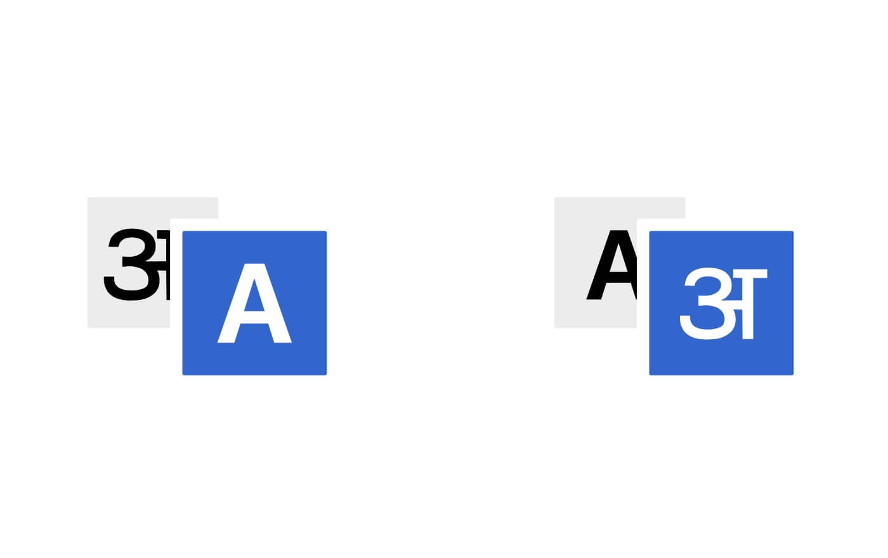
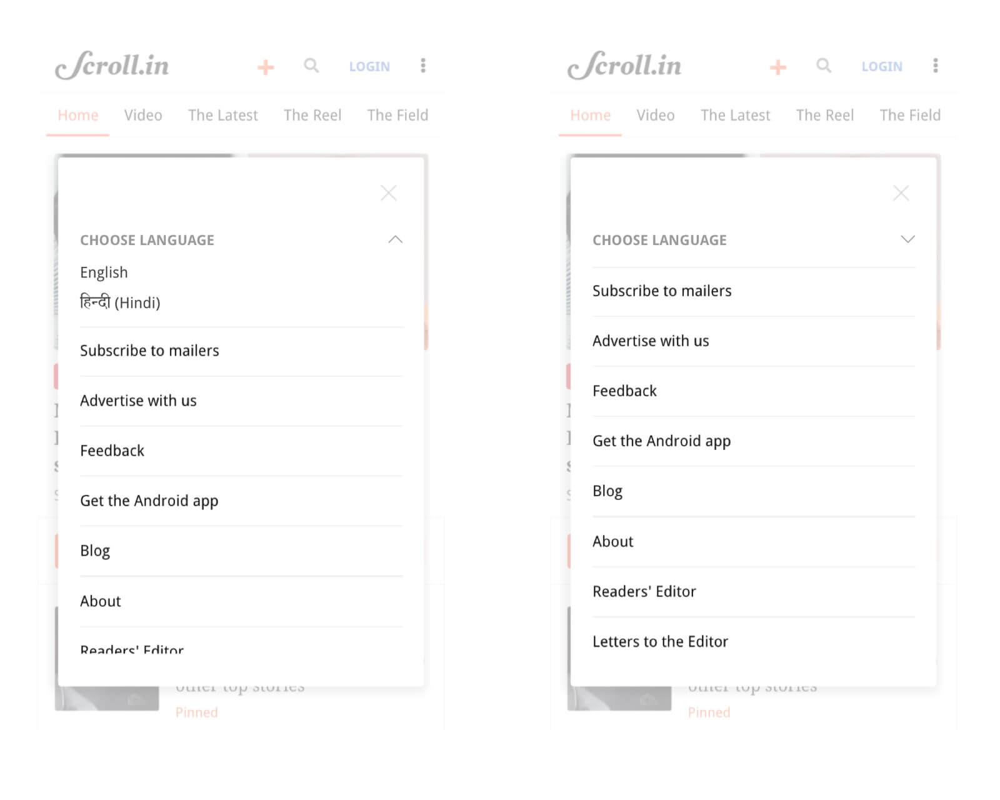
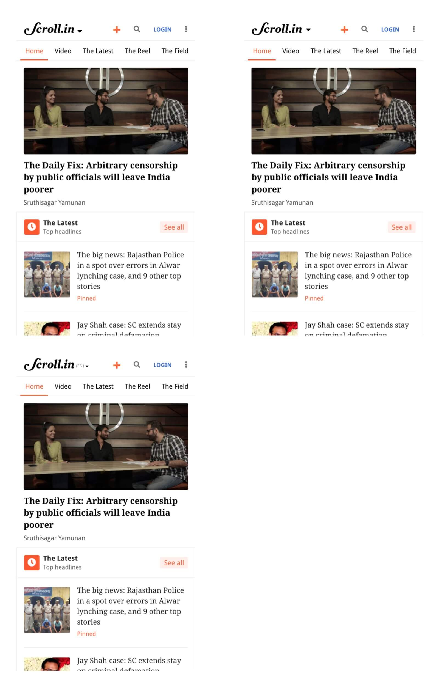
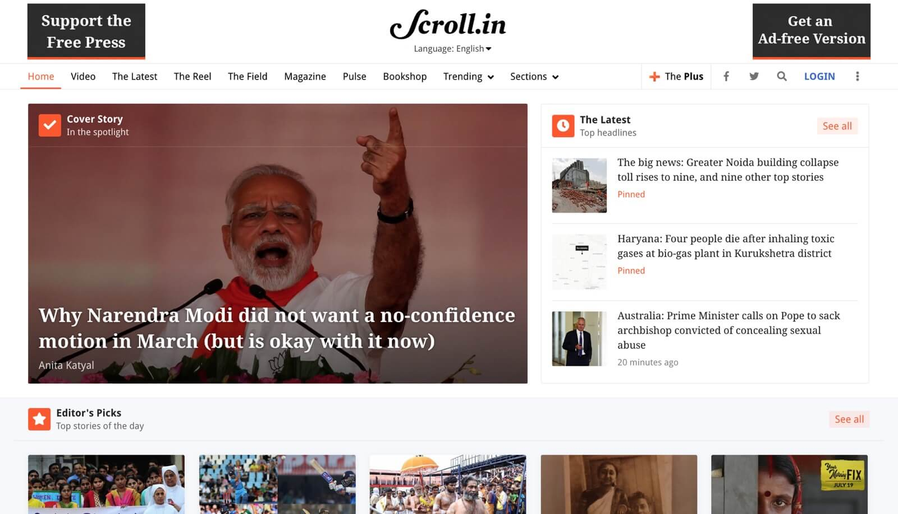
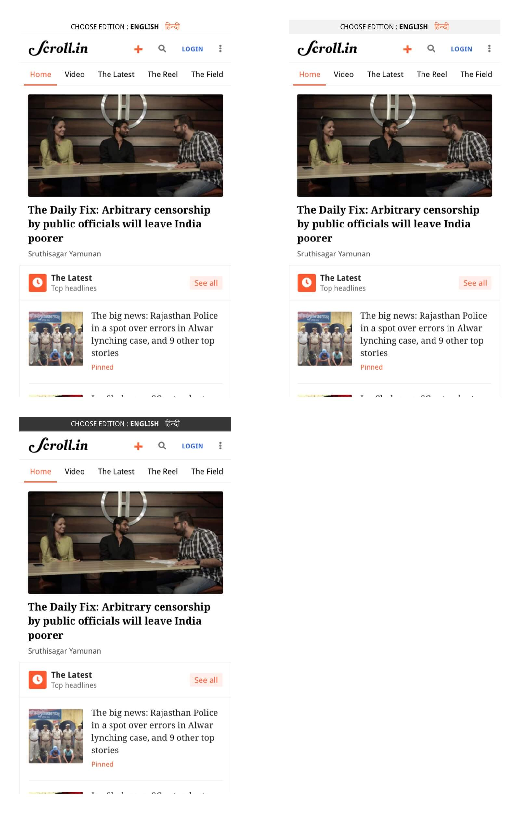
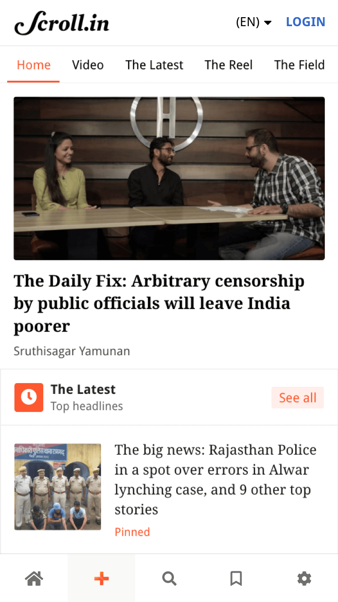

Language switcher
A way by which a user can switch languages on Scroll

Project Deliverables
-
User Interface
-
Interactive Prototype
My role
-
UI/UX Design
-
Interactions and Visuals
-
HTML integration with tech
Project Context
-
Duration — 4 Weeks
-
Product Design — Scroll
-
Team - Shivesh Mishra & Pushkraj Dole
Scroll is currently available in 2 languages/Editions - English and hindi. We needed something to let our readers know that we are available in different editions/languages other than what they are currently reading. To Solve this we moved through a couple of iterations trying to figure the possible methods.
Process
-
Minor research.
-
Discussion with team.
-
Design Iterations.
-
Finalising the design
-
HTML prototype.
-
Testing the design on multiple instances (Mobile, Tablets, Desktops & Large Desktops) to check if it's pixel perfect.
-
Push it to beta with the help of Tech and help integrate
-
Live
Design Explorations
During the product cycle we've gone through multiple iterations to provide the best experience for the readers that's efficient and easy to use.
Iteration 1: Putting the language switcher in kabab menu
The first thought was to put the language switcher in the kabab menu which appears when a reader click on the right menu on the top right corner
By using the accordion functionality we can easily open and close. Also the space can be easily managed.
This was a bit complex for the regular readers as they might not notice if a new feature is launched. So we decided to show language feature on the homepage itself.

Iteration 2 - Putting the language switcher dropdown next to scroll logo
Putting the language switcher next to scroll logo was a cleaner solution but this might affect the branding and for the desktops it might take the space of the date and time.


Iteration 3 - Creating Seperate section above navigation
Creating a seperate section for the language switcher above navigation.

Iteration 4 - Redesigning the whole menu

Final - A custom made icon
The final thought was to use a custom made icon that might change the languages with just one click. The reason behind this is - we are currently available in 2 editions so a single icon might work for now. We can change this completely whenever we are redesiging the full navigation. For the small devices (320px) we pushed the search option into the kabab menu as there is no breating space for 5 icons at the top menu.
Thanks for reading
See All Projects